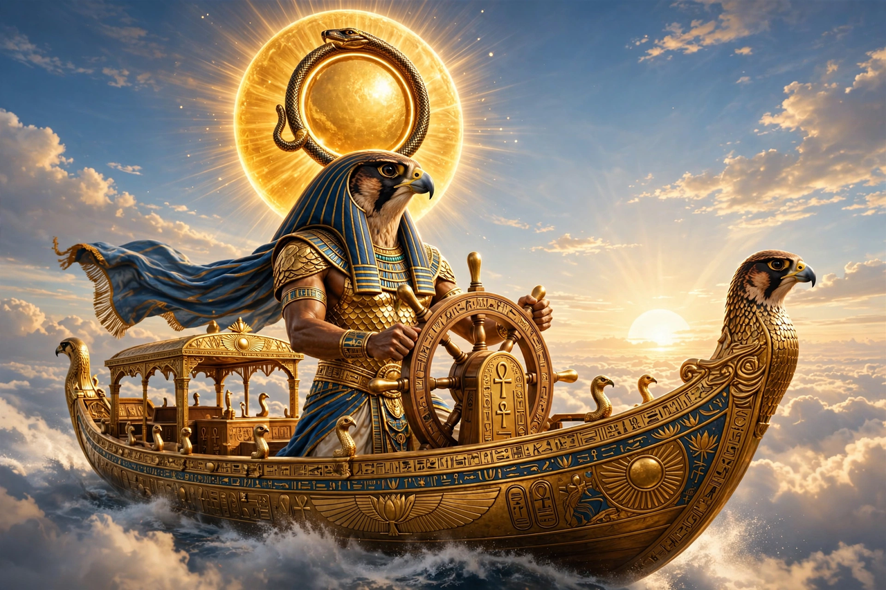

From Wikipedia, the free encyclopedia
| Ra | |
|---|---|
| Affiliation | Egyptian mythology; sun god and creator |
| Centre of worship | Heliopolis |
| Merged forms | Amun-Ra; Ra-Horakhty |
| Symbol | Solar disc; obelisk; bennu bird |
| Parents/children | Self-created (Heliopolitan tradition); father of Shu and Tefnut |
| Consort | - |

Ra (also Re) is the ancient Egyptian god of the sun and one of the most important deities of Egyptian mythology. Creator of the world in the Heliopolitan tradition, king of the gods, and the power whose daily journey across the sky and nightly voyage through the underworld ordered the cosmos, Ra rose to prominence in the Old Kingdom, when pharaohs styled themselves "Son of Ra" and built great sun temples and pyramids in his honour. His cult centre was Iunu, known to the Greeks as Heliopolis.
In the Heliopolitan creation account, Ra — identified or fused with the self-created Atum — emerged from the primordial waters of Nu upon the first mound of earth, and from himself produced Shu (air) and Tefnut (moisture), who in turn bore Geb (earth) and Nut (sky), parents of Osiris, Isis, Set and Nephthys: the nine-god Ennead. Human beings, in one famous myth, sprang from Ra's tears. Ra's power resided in part in his secret name, which the goddess Isis once tricked him into revealing by fashioning a serpent that poisoned him.
Each day Ra sailed the sky in his solar barque, the Mandjet; each night he travelled through the Duat, the underworld, in the Mesektet barque, growing old and passing through the twelve hours of darkness, threatened by the great serpent Apep (Apophis), embodiment of chaos, whom the god Set helped to repel. Reborn at dawn as Khepri, the scarab, Ra's cycle embodied maat — order continually renewed against disorder — and offered Egyptians their chief image of death and resurrection alongside the Osiris myth.
In the New Kingdom, Ra was combined with the Theban god Amun as Amun-Ra, king of the gods and patron of Egypt's empire; in other fusions he appears as Ra-Horakhty, falcon god of the horizon. The Eye of Ra — a fierce feminine power embodied by goddesses such as Sekhmet and Hathor — enacted his vengeance, most famously in the myth of the near-destruction of humankind, averted when Ra flooded the fields with beer dyed red as blood. Though eclipsed at times by Osiris and Isis, Ra remained a central figure of Egyptian religion for three thousand years.
Egyptian mythology · Anubis · Set · Osiris · Isis · Horus · Amaterasu (sun goddess of Japan)